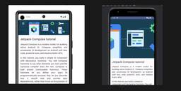
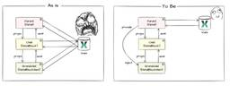

Yappli Tech Blog
https://tech.yappli.io/
株式会社ヤプリの開発メンバーによるブログです。最新の技術情報からチーム・働き方に関するテーマまで、日々の熱い想いを持って発信していきます。
フィード

プログラミング初心者がAndroidアプリ制作にチャレンジした話
Yappli Tech Blog
こんにちは！ ヤプリのアプリ申請チームのあきなです。 この記事は Yappli Advent Calendar 2024（2枚目）の21日目の記事です！ 自己紹介とチャレンジの背景 普段、私は「アプリ申請チーム」という名前の通り、アプリの申請作業をメインに担当しています。 いつもの業務に関わる記事もアドベントカレンダー1日目に書いているので、ご興味がある方はこちらも見てみてください！ tech.yappli.io 業務効率化のために、Google Apps Script（GAS）やJavaScriptを使うことはありますが、それ以外の技術にはあまり触れたことがありません。 今回アプリを作ってみ…
2時間前
Aurora MySQL 3 アップグレード時の検証まわりのおはなし
Yappli Tech Blog
Aurora MySQL 3 へのアップグレードで、ジェネラルログやスロークエリーを使って検証したあれこれについて
1日前
内製受付アプリの API を Cloud Run × Swift で実装してみた
Yappli Tech Blog
こんにちは、ヤプリで iOS エンジニアをしている三宅 (@tsushi130) です。 これまで SaaS を利用していた受付アプリを内製化した iPad アプリに移行する方針となり、その API を Cloud Run × Swift を利用して実装しました。 背景 2020 年にリモートワークの社員が増加しつつ来客数も減少している中で、年間 100 万円以上もかかっていた受付アプリのコストを削減すべく、内製化した受付アプリのリリースに向けて動き出したことが背景です。 技術選定 社内アプリということとアプリチーム主導で進めるということで、触れてみたい技術や新しい技術を取り入れつつ、新技術の…
3日前
フロントエンドのAPI通信における構造化の模索 1
1
Yappli Tech Blog
はじめに フロントエンドエンジニアの @aose_developer です。 自分がプログラミングにハマったきっかけでもありますが、「いかに構造化された可読性の高いコードが書けるか」を意識して「ああでもないこうでもない」と模索するのが専ら趣味です。 直近でも、開発業務を通じてAPI通信周りの実装とコードの構造化について模索していたので、今回はその備忘録的な記事を残したいと思います。 この記事は Yappli Advent Calendar 2024（2枚目） の12/12の記事です。 はじめに 前置き この記事について この記事の目的 どんな人が対象か 読者にどうなってほしいか 前提共有 使用…
3日前
StorybookのDocsを自動生成に頼らず泥臭くリッチに手書きする方法
Yappli Tech Blog
モチベーション 前置き 基本方針 想定読者 書くこと 書かないこと 完成形 参考リンク 作り方 環境構築 環境 初期化 Storybookに表示するまで Storyを操作可能にする 本題 ArgsTableの基本的な書き方 必須のマークを追加 カテゴリー分け 共通の情報をmetaに移動 型定義の変更 パーツのPropsを追加 依存関係のあるPropsとコントロールの修正 概要の追記 Tips お約束 モチベーション 前略、ヤプリ #1 Advent Calendar 2024の18日目の記事です。shadcn/ui(Radix UI)などコンポジションパターンでの利用が前提のライブラリは次の理…
3日前
チームを異動して気付いたこと
Yappli Tech Blog
この記事は Yappli Advent Calendar 2024 の16日目の記事です。 チーム異動のきっかけ 異動して気付いたこと 大変だったこと 問い合わせチームの経験が活きたこと 最後に こんにちは！アプリ申請チームの山崎です。 ヤプリには、申請代行をメインとするアプリ申請チームがあります。私は今年の4月からアプリ申請チームに異動しました。 それまでは、お客様からのメールやチャット対応を行う問い合わせ対応チームに所属していました。 今日は、チームを異動して感じたことや気付いたことについてお話ししたいと思います！ チーム異動のきっかけ まず簡単に経緯をお話しすると、私が所属していたカスタ…
5日前
新米エンジニアが身につけるべき習慣 1
Yappli Tech Blog
はじめに 開発でつまづいた時 Slackを見る ドキュメントを見る 人に聞く DMを極力使用しない 質問の仕方に気を付ける 「詳細はスレッドに記載」を控える 開発で気を付けること 15分ルール To Doメモを残す アウトプットを残す 仕様や実装に疑問を持つ おわりに はじめに ヤプリでサーバーサイドエンジニアとして内定者インターンをしている籔本です！ 師走になり、いよいよ「インターン生」という肩書きが通用する期間が残り短くなり、気を引き締めなければ思い始めています。 以前に私が書いた、こちらのブログもぜひご覧ください！ tech.yappli.io さて、私はヤプリのインターンに参加するまで…
6日前

YappliのCMSにおけるVuexとの付き合い方と今後の展望
Yappli Tech Blog
この記事は Yappli Advent Calendar 2024 の13日目の記事です。 Nuxtを採用した理由 当時のアーキテクチャの方針 現在の課題 1. アプリケーション全体がVuexと密結合になっている コード例 2. Vuexの移行コストが高い 3. グローバルで使わない状態もVuexに存在している 4. 肥大化したVuexモジュールの認知負荷が高い 5. dispatchが型安全でない どうするのが良さそうだったか 1. Vuexを参照する層を限定する 2. ラッパーを噛ませてVuexを参照する これからの旅路 必要な分だけグローバルな状態管理をする グローバルで持ちたい状態やロ…
8日前

Proxyman を活用してエラーの動作検証や不具合調査を行う
Yappli Tech Blog
こんにちは、ヤプリで iOS エンジニアをしている三宅 (@tsushi130) です。 🗒️ 本記事は ヤプリ #2 Advent Calendar 2024 の 9日目 の投稿です。 アプリエンジニアの方は使ったことのある人が多いと思いますが、今回は標題の Proxyman の活用について「エラーの動作検証」と「不具合調査」の 2点 紹介できたらと思います🙌🏻 エラーの動作検証 正常系はともかく、異常系の動作検証は例えばサーバーをモック化してエラーレスポンスを返すようにしたり、何かと準備が大変でコストが高かったりします。 そんなコストの高いエラーの動作検証ですが、Proxyman の Ma…
9日前
QAとしての意識の変化について考えてみた
Yappli Tech Blog
はじめに 初めまして。 QAの日沢と申します。 QAとして13年目になり、一度これまでの自分の軌跡みたいなものを振り返った時に思ったこと、感じたことをお伝えしたいと思います。 これまでの経歴 まずは簡単にこれまでの経歴について話したいと思います。 まとめるとこんな経歴になります。 チームスポーツと一緒で、同じ役割（QA）でもチーム（会社や環境）によって求められるものが変わります。 ここまでの自分を振り返り、ヤプリに行き着いた中で感じた、QAとしての意識で変わらない部分と変わった部分をまとめてみました。 ただ、これはあくまで私自身のケースであり、他にもいろんな考え方があるのも承知の上です。 なの…
10日前
「ヤプリにおける保守課題を解決するモジュール化戦略」という題で登壇しました #Yappli Tech Conference 2024
Yappli Tech Blog
こんにちは、ヤプリで iOS エンジニアをしている三宅 (@tsushi130) です。 Yappli Tech Conference 2024~Invitation to Empathy~ - connpass で 「ヤプリにおける保守課題を解決するモジュール化戦略」というテーマで登壇しました！ アーカイブ動画 www.youtube.com スライド speakerdeck.com 発表概要 ヤプリでは、ノーコードで高品質なネイティブアプリを作成できるアプリプラットフォームを提供しています。 その仕組みは、個社ごとのアプリを同じコードベースからビルド時に組み立てることで実現しており、そんな…
10日前
新卒SREが挑む！New RelicでYappli Data Hubの監視を劇的強化した話
Yappli Tech Blog
はじめに 想定読者 Yappli Data Hubとは 課題 影響範囲（対象クライアント）がわからない どの部分で問題が起こっているかがわからない そもそもインシデントに気付けない Google Cloudのリソース監視 ログの整備 アラートの強化 ダッシュボードの作成 おわりに はじめに 初めまして、私は今年度4月に24卒としてヤプリに入社した眞田と申します。 この記事は「New Relic Advent Calendar 2024」と「ヤプリ Advent Calendar 2024」の記事となります。 他にもたくさん興味の惹かれるような記事がございますので、ぜひご覧ください。 みなさん、…
10日前
protoファイルからAPIドキュメントを自動生成するまでのハンズオン
Yappli Tech Blog
ヤプリ Advent Calender 2024の5日目の記事です。 はじめに こんにちは、サーバーサイドエンジニアの中川です。 API開発時にリクエストやレスポンス内容を定義して、フロントやネイティブのエンジニアと合意をとってから開発を進めると思います。 最初に仕様定義してるとはいえ、実装途中で「やっぱりこっちの方がいい」となって双方合意の元API仕様を変更することもよくあると思います。 そうなった時、もし社内ドキュメントなどコードとは別にAPIドキュメントをまとめていた場合はそっちも変更する必要がありますよね。変更内容が少なければすぐに変更できますが、変更量が多い場合はドキュメント更新は後…
14日前
シニアエンジニアが若手エンジニアが企画した勉強会に参加してみた
Yappli Tech Blog
この記事はヤプリ Advent Calendar 2024 の6日目の記事です！ こんにちは。フロントエンドエンジニアの武井です。 前回こちらでブログを書いてからずいぶんと間が空いてしまいましたが、アドベントカレンダーをやろうということで重い腰をあげてみました。 ブログも書かずに潜行しているうちにアラフィフを迎えてしまい。シニアエンジニアというかシニアになってしまいました。 革新的な技術のめまぐるしいフロントエンド界隈を定年まで生き抜くために、若手が企画する勉強会に参加してみました。 「おじいちゃん。もうjQueryなんて使ってないのよ？」
15日前
SSL通信がエラーになったので調べてみた
Yappli Tech Blog
どうも、株式会社ヤプリのサバゲー部所属のわたなべです。 先日、夏に提携したばかりのフラーさんも含めてサバゲー部の活動をしてきて、久しぶりの筋肉痛になりました。 もっと鍛えねば、と思いました。 さて、今回はSSL通信がエラーになって、いろいろ調べて大変だった話をしたいと思います。 ある日エラーは突然に… 新しい証明書を配置してもエラーが出ちゃう？ まずは状況の再現から 原因調査してみるも… あとは、中間CA証明書を配置するだけ で、どうすればよかったんだろ？的な結論 謎の解明：ローカルのPCからのcurlコマンドだとなぜ動いたのか？ 最後に ある日エラーは突然に… とある日、いつものように仕事を…
16日前
BigQuery上にあるUDFをdbt macroで管理するようにした話
Yappli Tech Blog
この記事は dbt Advent Calendar 4日目＆Yappli Advent Calendar 4日目の記事です。 こんにちは！ データサイエンス室の山本（@__Y4M4MOTO__）です。 ヤプリではdbtを用いて分析用データ基盤を構築しています。過去の記事で、UDFはdbtで管理せずBigQuery上に置く運用を採っているとの旨を書きました。 BigQueryのUDFはdbtプロジェクトでは管理せず、UDF用のデータセットを用意することで管理していました。この管理方法を採っていた理由は、UDFとして実装した処理をデータ基盤だけでなくアドホックな分析でも利用できるようにするためです…
17日前
JSConf JPに参加しました
Yappli Tech Blog
この記事はヤプリ Advent Calendar 2024 4日目の記事です！ はじめに フロントエンドエンジニアの平川です。 今回は11/23(土)に開催されたJSConf JPに参加してきたのでそのレポートです。 jsconf.jp 印象に残ったセッション 幸せの形はどれも似ているが、不幸なプロジェクトはそれぞれの形がある スライド WebアプリケーションにおけるパフォーマンスバジェットやWeb Vitalsという指標について、Light HouseとChorome DevToolsを使ったパフォーマンスの改善方法についての内容でした。 私個人として恥ずかしながらLight Houseは見…
17日前
「内定者インターン時代に半年かけて作った全社横断のSlackデータ基盤、TROCCOなら爆速構築できる説」の検証
Yappli Tech Blog
この記事は Yappli Advent Calendar 2024（2枚目） 、 TROCCO® Advent Calendar 2024 の12/3の記事です。 こんにちは！データサイエンス室（以下、DS室）の山本です（@__Y4M4MOTO__）です。 内定者インターン時代に全社横断のSlackデータ基盤を構築しました。作成したデータ基盤はSlack APIを叩いてその結果をBigQueryへ格納するものだったのですが、Pythonで実装したところとても工数がかかり、運用開始まで半年（正確には5ヶ月）かかりました…。その後、「Pythonで実装した処理、TROCCOならサクッと作れるのでは…
18日前
社内でDroidKaigi 2024の視聴会を開催してみました
Yappli Tech Blog
こちらの記事はヤプリ Advent Calendar 2024 10日目の記事です。 こんにちは、Androidエンジニアの伊藤です😆 2024年9月11日(水) - 13日(金)の3日間でDroidKaigiがありましたね！今年で10年目を迎えたこともあり、知名度も高まっています。 海外からの登壇者も多数参加され、大盛り上がりのイベントだったのを覚えています! 当時の記録もブログに書いてありますので、ぜひチェックしてみてください！ tech.yappli.io さて、今回はそんなDroidKaigi 2024について Android以外のエンジニアの方も気軽に参加できるような動画視聴会を社内…
19日前
Findy Lunch LTに『ヤプリのデータカタログ整備 1年間の歩み』という題で登壇しました！
Yappli Tech Blog
この記事は Yappli Advent Calendar 2024（1枚目） の初日の記事です。 明日以降もヤプリ社員が様々な記事を毎日投稿していきますので、ぜひお読みください！🙌 こんにちは！データサイエンス室（以下、DS室）の山本です（@__Y4M4MOTO__）です。 11/28(木)に開催されたFindy Lunch LT『データカタログ事例から学ぶメタデータ管理の実態』に表題のタイトルで登壇してきました！ findy.connpass.com この記事では、その時の登壇資料や発表中では割愛した内容などについて記しています。 登壇資料 補足 「①dbt導入と並行したdbt docs整備…
20日前
「ストアのポリシー変更時の傾向と対策」という題で登壇しました #Yappli Tech Conference 2024
Yappli Tech Blog
この記事は Yappli Advent Calendar 2024（2枚目）の1日目の記事です 皆さんこんにちは。プロダクト開発本部・アプリ申請チームの秋永です。 Yappli Tech Conference 2024~Invitation to Empathy~ - connpass で 「ストアのポリシー変更時の傾向と対策」というテーマで登壇しました。 アーカイブ動画 www.youtube.com スライド speakerdeck.com 発表概要 Apple社、Google社のポリシー変更における対応について、過去の対応事例を元にご紹介しております。 800以上のアプリ申請を行うことで…
20日前
ヤプリの R&D 領域で Apple Vision Pro への取り組み - お料理アプリ開発
Yappli Tech Blog
はじめに こんにちは、ヤプリでiOSエンジニアをしている菅（@Nao_RandD）です。 前回に続いて、Apple Vision Pro に関する記事です。 前回記事： tech.yappli.io 今年の夏、ヤプリでは R&D 領域の取り組みとして Apple Vision Pro を3台購入しました!（1台でなく3台！、すごいっ！🎉） その取り組みのひとつで、ヤプリのクライアントに協力してもらい visionOS 向けにプロトタイプアプリを作成しました。 動画のような visionOS 向けお料理アプリになっています。 プロトタイプアプリの動作 今回は実装を交えて、そのプロトタイプアプリを…
1ヶ月前
Apple Vision Pro を社内で普及する活動をしました
Yappli Tech Blog
はじめに こんにちは、ヤプリでiOSエンジニアをしている菅（@Nao_RandD）です。 今年の夏、ヤプリでは R&D 領域の取り組みとして Apple Vision Pro を3台購入しました!（1台でなく3台！、すごいっ！🎉） Apple Vision Pro は世の中にすでに広く普及しているものではなく、これからの新しい体験を提供する未来のデバイスといえます。 そのため、「どのように活用するか」「どんな未来を描くか」をエンジニアだけでなく、ビジネスサイドのメンバーとも協力しながらアイデアを出し合うことが必要です。 この記事では、Apple Vision Pro を活用したビジネスアイデア…
1ヶ月前
「全社横断データ活用推進のコツとその負債とのつき合い方」という題で登壇しました #Yappli Tech Conference 2024
Yappli Tech Blog
はじめに こんにちは。プロダクト開発本部・データサイエンス室の阿部昌利(@abe_masatoshi)です。 Yappli Tech Conference 2024 にて「全社横断データ活用推進のコツとその負債とのつき合い方」というテーマで登壇しました。今回はそのアーカイブ動画とスライドを紹介します。 アーカイブ動画 スライド 発表概要 今回の登壇では、主に社内向けのデータ活用の幅広さと、活用を進める中で遭遇した困難への対応方法について発表しました。 現在のヤプリでは、SQLを通じて分析用データベースを利用する組織が、開発本部のデータサイエンス室に限られ、会社全体のデータ活用推進も担う立場にあ…
1ヶ月前
Vue Fes Japan 2024とAfter Talkに参加しました
Yappli Tech Blog
ヤプリはVue Fes Japan 2024にゴールドスポンサーとして参加しました。また、弊社からは30分のセッション1名と、After Talkにて10分間のLT×2名の登壇がありました。 少し時間が経ちましたが、こん(@k0n_karin)目線でVue Fes Japan 2024について振り返ってみます。 セッションの資料 speakerdeck.com LTの資料 こん(@k0n_karin)の分 speakerdeck.com @aose_developerの分 speakerdeck.com CfP応募から準備開始まで 今年のVue FesのセッションCfPに応募したのは7月頃。8…
1ヶ月前
「ヤプリ新卒SREの オンボーディング」という題で登壇しました #Yappli Tech Conference 2024
Yappli Tech Blog
24新卒でSREとして入社した眞田が、「ヤプリの新卒エンジニアとは？」「新卒SREってどんな感じ？」といった内容を発表しました！興味のある方は是非ご覧ください！
1ヶ月前
「プラットフォーム開発における認証設計の苦労」という題で登壇しました #Yappli Tech Conference 2024
Yappli Tech Blog
はじめに 登壇タイトルのスライド画像 こんにちは。プロダクト開発本部・サーバーサイドエンジニアの佐野きよ(@Kiyo_Karl2)です。 Yappli Tech Conference 2024~Invitation to Empathy~ - connpass で 「プラットフォーム開発における認証設計の苦労」というテーマで登壇しました。 今回はそのアーカイブ動画とスライドを紹介します。 アーカイブ動画 youtu.be スライド speakerdeck.com 発表概要 今回の登壇では、ノーコードのアプリプラットフォームである「Yappli」に、gifteeというe-Giftサービスとの外部…
2ヶ月前
サーバーサイドグループのインシデント改善の取り組み
Yappli Tech Blog
こんにちは、サーバーサイドグループのマネージャーの鬼木です。 今回は今年から取り組み始めたサーバーサイドグループで行っているインシデント改善の取り組みについて紹介します。 弊社では今後のサービス拡大に向けて、新規開発だけでなく保守面の強化も進めています。その一環として、今年からサーバーサイドグループ内でインシデント対応の改善を目的とした委員会1を立ち上げ、活動を行ってきました。現在は委員会は5名で運営しています。 今回はこの取り組みや、ヤプリでの改善活動の流れについて紹介します。 委員会の目的 委員会設立にあたり、その活動目的を「インシデント改善を永続的に行う文化の醸成」としました。 発足時に…
3ヶ月前
CircleCIで失敗したテストケースのみ再実行できるようにする方法
Yappli Tech Blog
はじめに Rerun failed testとは? 実装ポイント 前提 環境 config.ymlの実装 circleci tests runを利用する before after ハマりポイントその1 - junit.xmlが出力されないケースの考慮 ハマりポイントその2 - テスト再実行時に persist_to_workspace ステップで指定されたディレクトリにコンテンツが見つからず、並行実行が失敗する before after 成功ログ まとめ 最後に はじめに こんにちは。サーバーサイドエンジニアの佐野きよ(@Kiyo_Karl2)です。 CircleCIにはRerun faile…
3ヶ月前
#TROCCOUG にて「私のdbt布教用資料 〜TROCCOUG Ver.〜」という題で登壇してきました
Yappli Tech Blog
こんにちは！データサイエンス室（以下、DS室）の山本です（@__Y4M4MOTO__）です。 2024年9月13日に開催されたTROCCOのユーザー会「TROCCO UG」にて、「私のdbt布教用資料 〜TROCCOUG Ver.〜」というタイトルでお話ししてきました。 TROCCO UGはTROCCOを中心にデータマネジメント領域に関する知見を共有する場で、毎回決められたテーマに沿った発表が行なわれています。今回のテーマは「dbt」でした。 pug.connpass.com この記事では当日の様子などについて記しています。 登壇資料 当日の様子 結び 登壇資料 speakerdeck.com…
3ヶ月前